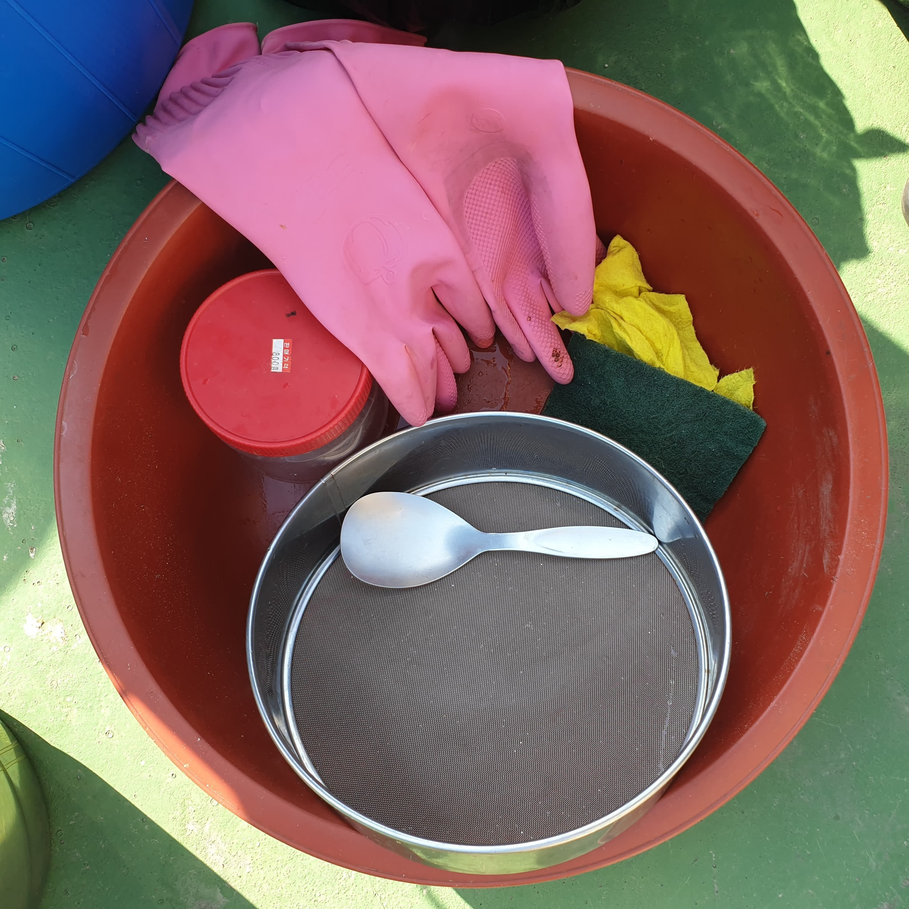

준비물


준비물은 이러하다. 고무장갑, 큰대야 여러개, 주걱, 거름망, 그리고 멸치와 디포리라는 물고기, 다시마, 표고버섯등을 끓인 물, 천일염,다들 집에 몇 개씩 있는 메주, 그리고 말린 메줏가루, 1년정도 묵은 간장, 그리고 묵은 된장, 빻은 고추씨 가루 등이 필요하다.
디지털 퍼블리싱(줄여서 디퍼)의 주제를 정하지 못해 고민을 하던 나는 할머니의 부름을 받게 되었다.
“규민아 이리와서 할머니 좀 도와줄래?”
할머니의 부름을 받고 옥상으로 간 나는 뭔가 이상한 기류를 느꼈다. 뭔가 엄청난 일이 벌어지고 있다는 것을 느끼고 핸드폰을 들어 사진을 찍었다.
…?
할머니는 된장을 만들거라고 하셨다. 그리하여 결정된 나의 디퍼 주제는 된장만들기이다.
준비물은 이러하다. 고무장갑, 큰대야 여러개, 주걱, 거름망, 그리고 멸치와 디포리라는 물고기, 다시마, 표고버섯등을 끓인 물, 천일염,다들 집에 몇 개씩 있는 메주, 그리고 말린 메줏가루, 1년정도 묵은 간장, 그리고 묵은 된장, 빻은 고추씨 가루 등이 필요하다.
먼저 큰 대야에 멸치와 이것저것을 끓인 육수에서 건더기를 걸러내어 붓는다. 형체만 겨우 알아볼 수 있었던 멸치들의 사진은 너무 잔혹한 장면이기에 차마 올리진 않도록 하겠다. 너무 푹익은 멸치육수 향기가 매우 강렬했다. 냄새만 맡아도 절여 질 것 같았다.
육수에 말린 메줏가루를 붓고 그위에 메주를 올린다. 왜 메주를 두번이나 넣는걸까 라는 생각을 했지만 생각하는걸 그만 두기로 했다.
메주는 커다란 통에서 간장을 만들던 메주 꺼내어 넣었다. 우리집도 평범한 다른 집들처럼 집에서 이렇게 메주로 간장을 만들어 먹는다. 통에는 메주가 5개정도 들어있었고 통안에서 숙성되던 간장은 다른 숙성 항아리로 옴겨 담았다. 할머니의 말씀으로는 이렇게 만든 전통간장과 시중에 파는 간장은 맛이 완전 다르다고 했다. 깊은 맛이 있다나.
근데 할머니가 간장을 옮겨 담으시다 무릎에 간장이 튀셨는데 그부분이 쓰라리다라고 하셨다. 과연 먹어도 되는건지 모르겠다.
그위에 묵은 간장, 천일염, 묵은 된장을 넣고 섞는다. 된장을 만드는데 된장을 넣는다는게 좀 모순적이지만 이것 역시 생각하지 않기로 했다. 묵은 된장은 장독대에서 1년동안 숙성되고 있던 친구로 할머니는 진한맛이 좋다며 맛보라고 하셨지만 먹진 않았다.
된장에는 막된장, 토장, 막장, 즙장, 담북장, 청태장, 두부장, 지레장, 비지장, 팥장, 생황장, 무장, 쌈장, 청국장등등 아주 많은 종류가 있다.
그중 막된장은 메주에서 간장을 빼고 부산물로 만들어 먹는것이고, 토장은 막된장에 메줏가루와 소금을 섞거나 막된장을 넣지않고 메줏가루에 소금물만 넣고 담가 2~3개월 숙성시키는 것으로 우리집 된장은 토장에 가깝다는 생각이 든다. 여기에 멸치육수등 할머니만의 재료가 들어가 특별한 레시피?가 되었다.
이제 열심히 으깨준다. 으깨고 또 으깨준다. 처음엔 메주가 생각보다 단단해서 놀랐다. 무슨 흙 벽돌을 부수는줄 알았다. 메주를 으깨면서 옛날사람들은 어떻게 이런걸 만들어 먹을 생각을 했을까라는 생각을 했다. 역시 인간은 기발한 동물이다.
혹시나 할머니가 고생하시는거 옆에 사진만 찍고있던거 아니냐는 생각을 할수도 있지만 사실 열심히 으깨고 있었다. (동생이 찍어줌)
으깨준 된장을 항아리에 담았다. 겉으로 보기엔 항아리가 작아보여서 다 들어갈까 생각했었는데, 생각보다 항아리가 컸다. 항아리에 가득 담긴 된장을 바라보니 뭔가 해냈다는 뿌듯함과 디퍼 과제를 할만한 주제가 생겨서 기분이 좋았다. 바로 먹을 수 있는 건가 했는데 적어도 여름지날때까지 숙성시켜야 한다고 하셨다.
담아둔 된장위에 보자기를 덮고 그위에 빻은 고추씨와 천일염을 뿌려 마무리한다. 이렇게 보니 된장보다는 고춧가루가 담긴 통 같았다. 이후 보자기로 한번 더 감싸고 뚜껑을 덮어두어 마무리 했다. 일이 끝나 쭈그려 앉아있던 나는 일어나자 마자 바지에 덕지덕지 묻은 된장들을 발견했다. 아….ㅠㅠ
할머니께서는 매년 50년 넘게 이 일을 해오셨다고 했다. 가을마다 콩을 으깨서 메주를 만들고 겨울에 장독대에 담아 두시고 봄이되면 된장을 만드시고 여름에 그걸 꺼내서 요리를 해주셨다. 이제는 몸도 성치 않으셔서 그만하시라고 가족들은 말하지만 할머니는 하던 일을 그만두 실 수는 없다고 말씀하신다.
나도 할머니를 말리고 싶었지만 본인이 하고싶다고 하시는걸 말릴수는 없었다. 그래서 나는 최대한 힘이 안드실 수 있도록 앞으로도 많이 도와드려야겠다고 생각했다.